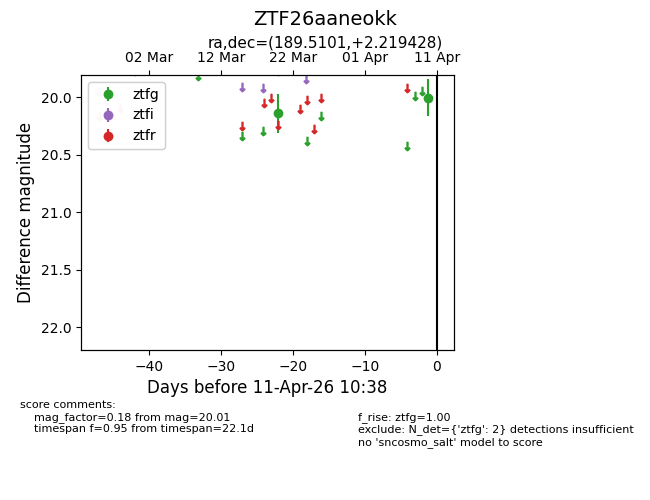
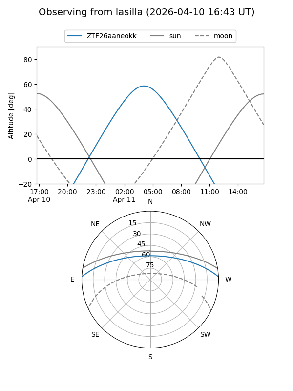
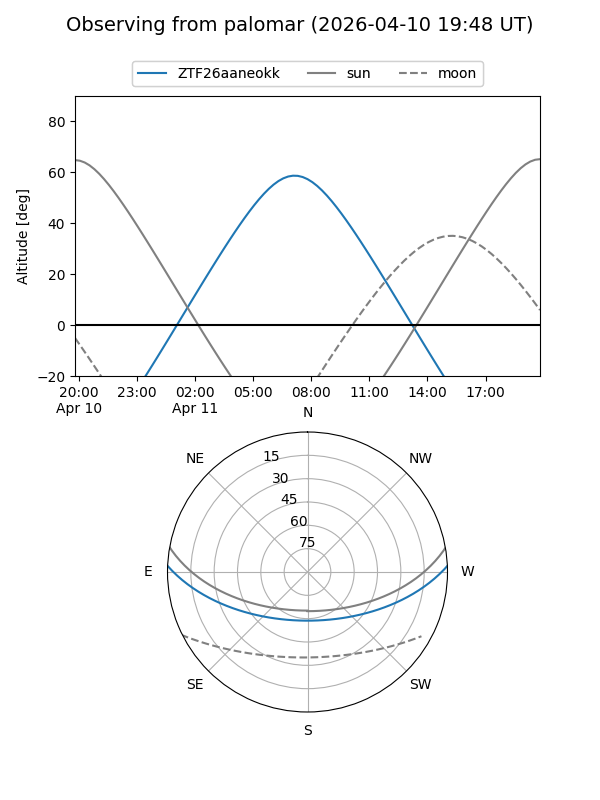

ZTF26aaneokk
Target ZTF26aaneokk at 2026-04-11 10:45
Aliases and brokers:
FINK: link
Lasair: link
ALeRCE: link
alt names
ZTF26aaneokk (ztf,fink_ztf)
Coordinates:
equatorial (ra, dec) = 189.5101,+2.21943
equatorial (HMS+DMS) = 12:38:02.42,+02:13:09.94
galactic (l, b) = (295.0258,+64.88531)
Flags:
Photometry:
last ztfg=20.01
2 ztfg detections
Lightcurve

Visibility


Additional plots